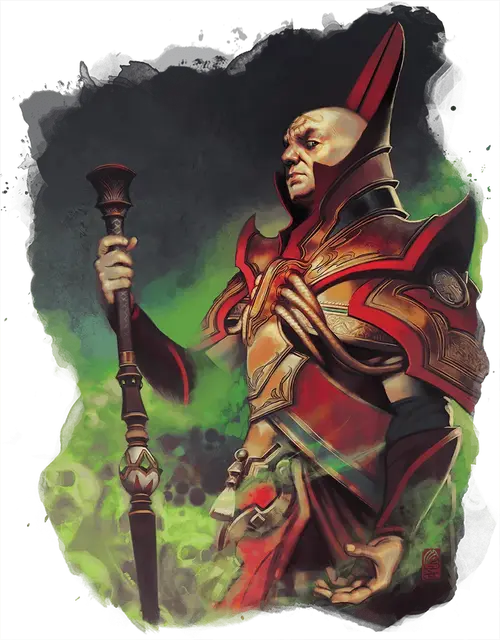

Рат Модар
Rath Modar
Средний Гуманоид (Человек), законно-злой, именной НИП

Класс Доспеха 13 (16 с доспехом мага)
Хиты 71 (11к8 + 22)
Скорость 30 футов
| мод | спас | ||
|---|---|---|---|
| СИЛ | 11 | +0 | +0 |
| ЛОВ | 16 | +3 | +3 |
| ТЕЛ | 14 | +2 | +2 |
| мод | спас | ||
|---|---|---|---|
| ИНТ | 18 | +4 | +7 |
| МДР | 14 | +2 | +5 |
| ХАР | 10 | +0 | +0 |
Навыки Магия +7, Обман +3, Проницательность +5, Скрытность +6
Чувства пассивное Восприятие 12
Языки Общий, Драконий, Инфернальный, Первичный, Тэйский
Опасность 6 (2300 опыта)
Бонус мастерства +3
Особенности
Специальное снаряжение. У Рат есть посох огня [staff of fire] и свитки переносящая дверь [dimension door], падение пёрышком [feather fall] и огненный шар [fireball].
Использование заклинаний. Рат является заклинателем 11-го уровня. Его базовой характеристикой является Интеллект (Сл спасброска от заклинаний 15, +7 к атакам заклинаниями). Рат обладает следующими подготовленными заклинаниями волшебника:
• Заговоры (по желанию): огненный снаряд [fire bolt], малая иллюзия [minor illusion], фокусы [prestidigitation],
• 1го уровня (4 ячейки): цветной шарик [chromatic orb], сверкающие брызги [color spray], доспехи мага [mage armor],
• 2го уровня (3 ячейки): обнаружение мыслей [detect thoughts], отражения [mirror image], воображаемая сила [phantasmal force]
• 3го уровня (3 ячейки): контрзаклинание [counterspell], огненный шар [fireball], образ [major image]
• 4го уровня (3 ячейки): смятение [confusion], высшая невидимость [greater invisibility]
• 5го уровня (2 ячейка): притворство [seeming], фальшивый двойник [mislead]
• 6го уровня (1 ячейка): сфера неуязвимости [globe of invulnerability]
Действия
Посох. . Рукопашная атака оружием: +4 к попаданию, досягаемость 5 футов, одна цель. Попадание: 4 (1к8) дробящего урона.
Реакции
Иллюзорный двойник (Перезарядка когда Рат совершает краткий или длительный отдых). Когда существо, которое видит Рат, атакует его, он может подставить под удар иллюзорного двойника себя. Эта атака автоматически проваливается, а двойник после неё немедленно исчезает раскрывая обман.